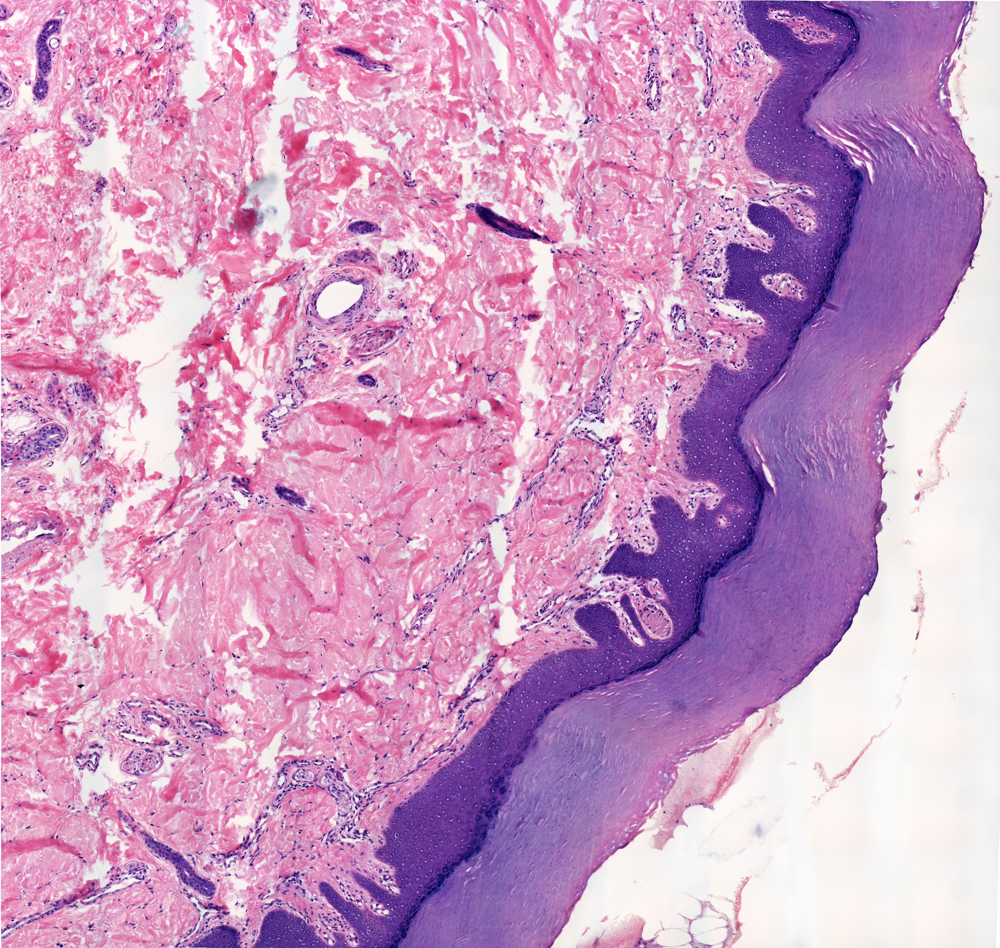
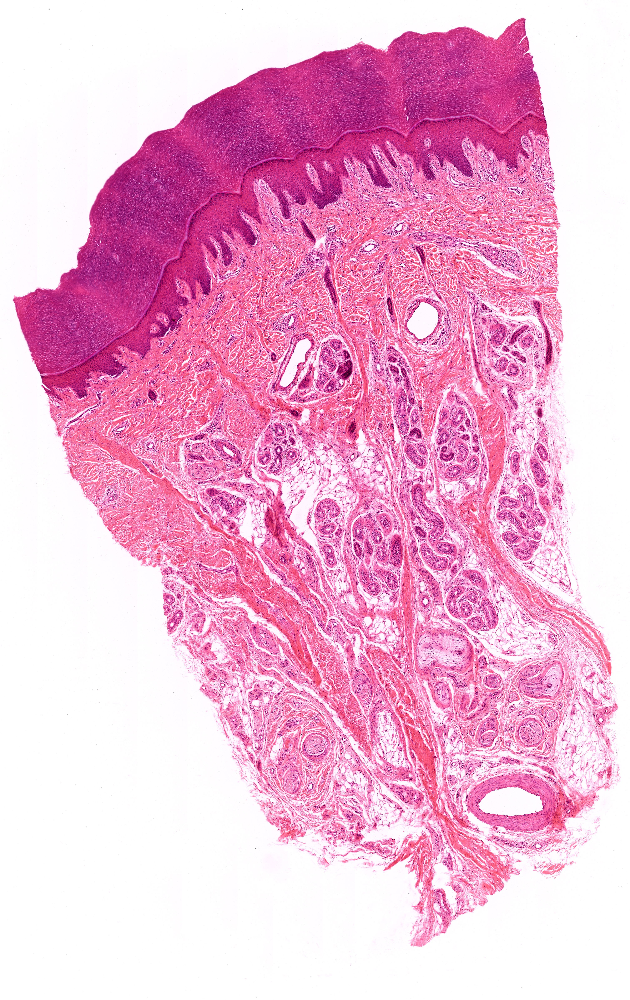
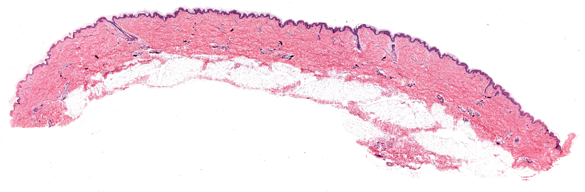
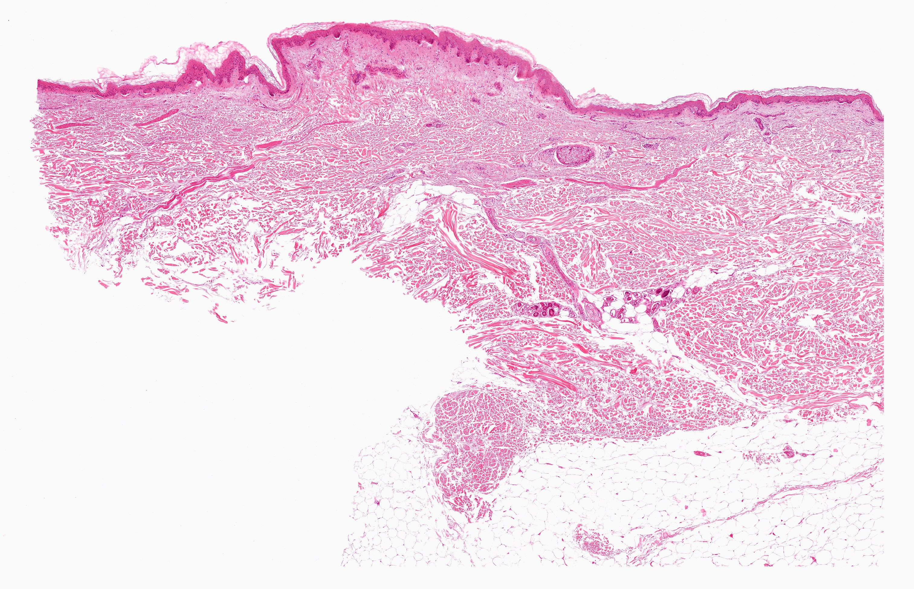
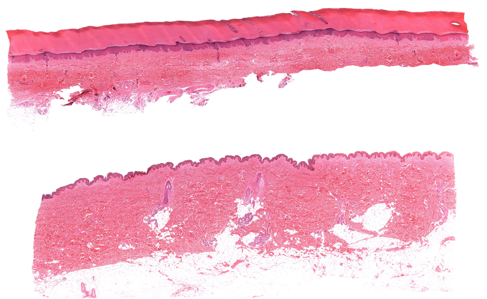
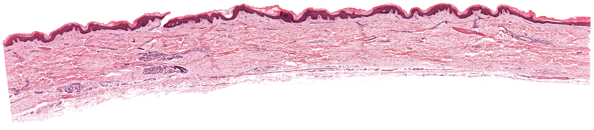
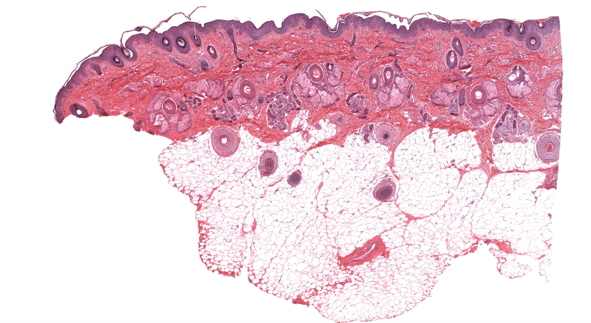
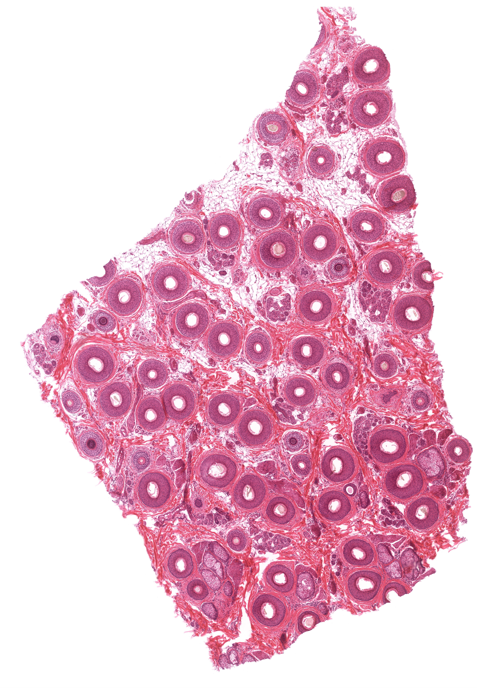
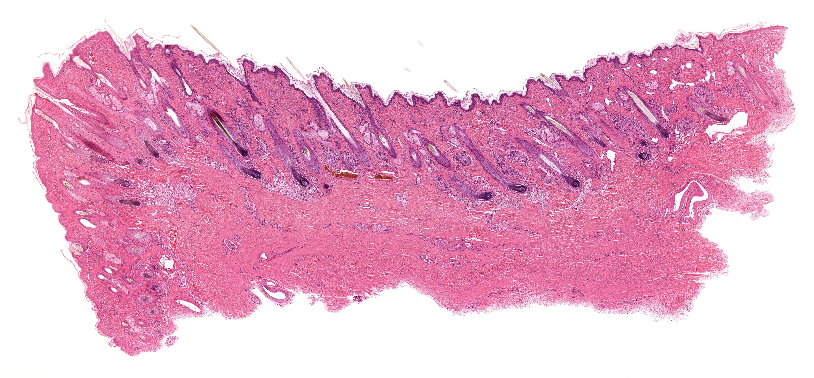

Chapter 11 · 器官系统
皮肤
Skin · 5 小节 · 12 张切片 · 9 张电镜 · 本地概览 12 张
本章导语
皮肤由表皮和真皮构成，借皮下组织与深部相连，是机体最大的屏障器官。本章以厚皮与薄皮的对比为主线：先在厚皮上把表皮五层、真皮两层看清，再用薄皮认识毛囊、皮脂腺与汗腺等附属器；随后观察黑素细胞在基底层的分布，以及触觉小体和环层小体两种有被囊神经末梢。判读切片时先定皮肤类型，再逐层描述结构。
复习重点
- 掌握厚皮表皮五层的结构特点与角化过程。
- 比较厚皮与薄皮在表皮厚度、附属器上的差异。
- 掌握毛囊的结构与毛球、毛乳头的关系。
- 能辨认触觉小体与环层小体的位置和形态。
易混淆对比
- 厚皮 vs 薄皮：表皮厚度、角质层厚薄以及有无毛囊和皮脂腺
- 触觉小体 vs 环层小体：位置深浅、体积大小与层板结构是否明显
- 皮脂腺 vs 外泌汗腺：皮脂腺为全浆分泌连于毛囊，汗腺为单曲管状腺
阅读提示：本页中文要点为自编复习笔记，不是原站正文的翻译；标本图像为经作者书面许可保存的中分辨率概览，每张卡片保留 © 署名与原页面链接，“原站本章/原站切片”可查看高倍与结构标注。本站为 Histology Guide 的非官方中文学习改编版，未经其认可或背书。
厚皮
Thick Skin
- 表皮为角化的复层扁平上皮，自基底向表面分五层。
- 基底层为单层立方细胞，棘层细胞间有棘状突起相连。
- 颗粒层细胞含透明角质颗粒，透明层仅见于厚皮。
- 角质层最厚，细胞完全角化、核消失，呈嗜酸性板层状。
- 真皮分乳头层与网织层，乳头层含丰富的毛细血管。
低倍镜低倍镜下先确认表皮与真皮分界以及角质层的厚度
高倍镜高倍镜下由基底层向表面逐层辨认表皮五个层次
易混提示：制片中透明层常与角质层融合，不必勉强在每张切片上找到它。
相关标本 · 3

点击图片放大 · 本地概览
MH 091 Thick Skin
厚皮（无毛皮）
H&E
本地概览
2788×1791
图像 © Histology Guide 及/或原始贡献者 · 非商业教育用途，经许可保存；原页面链接见下方

点击图片放大 · 本地概览
MH 091bhr Thick Skin
厚皮（高倍观察）
H&E
本地概览
4622×4385
图像 © Histology Guide 及/或原始贡献者 · 非商业教育用途，经许可保存；原页面链接见下方

点击图片放大 · 本地概览
MHS 235 Thick Skin
厚皮（MHS 235）
H&E
本地概览
3025×4795
图像 © Histology Guide 及/或原始贡献者 · 非商业教育用途，经许可保存；原页面链接见下方
薄皮
Thin Skin
- 表皮较薄，颗粒层和透明层不明显，角质层薄。
- 真皮较薄，但毛囊、皮脂腺和外泌汗腺等附属器发达。
- 真皮内血管和神经末梢丰富，乳头层不如厚皮规则。
- 薄皮覆盖体表大部分区域，因含毛发故又称有毛皮。
低倍镜低倍镜下先寻找毛囊，据此判断为有毛的薄皮
高倍镜高倍镜下确认较薄的表皮各层并识别皮脂腺
易混提示：斜切的薄皮表皮可显得较厚，判断类型应以有无毛囊为主要依据。
相关标本 · 2

点击图片放大 · 本地概览
MH 090 Thin Skin
薄皮（有毛皮）
H&E
本地概览
3758×1237
图像 © Histology Guide 及/或原始贡献者 · 非商业教育用途，经许可保存；原页面链接见下方

点击图片放大 · 本地概览
MH 277-278 Thin Skin
薄皮（弹性纤维染色）
Elastic Fibers
H&E/Verhoeff
本地概览
3025×1950
图像 © Histology Guide 及/或原始贡献者 · 非商业教育用途，经许可保存；原页面链接见下方
电镜照片 5 张（在线查看）
色素皮肤
Pigmented Skin
- 黑素细胞位于表皮基底层，胞体发出突起伸入棘层。
- 黑素颗粒经突起输送给角质形成细胞，聚集于细胞核上方。
- 黑素颗粒可吸收紫外线，保护细胞核内的 DNA。
- 黑素细胞在 H&E 染色中胞质透亮，需特殊染色或免疫标记显示。
低倍镜低倍镜下先确定表皮与真皮交界处即基底层所在
高倍镜高倍镜下在基底层寻找核小而胞质透亮的细胞
易混提示：基底层胞质透亮的细胞也可能是朗格汉斯细胞，不能只凭透亮判定为黑素细胞。
相关标本 · 2

点击图片放大 · 本地概览
MH 088 Thick and Thin Skin
厚皮与薄皮
Melanin
H&E
本地概览
3437×2113
图像 © Histology Guide 及/或原始贡献者 · 非商业教育用途，经许可保存；原页面链接见下方

点击图片放大 · 本地概览
MHS 236 Thin Skin
薄皮（MHS 236）
Melanin
H&E
本地概览
5050×1106
图像 © Histology Guide 及/或原始贡献者 · 非商业教育用途，经许可保存；原页面链接见下方
电镜照片 2 张（在线查看）
毛囊
Hair Follicles
- 毛囊由上皮性根鞘和结缔组织性根鞘共同包绕毛根构成。
- 上皮根鞘分内根鞘与外根鞘，内根鞘随毛干一同角化。
- 毛球底部凹陷容纳毛乳头，内含丰富血管和神经。
- 毛囊一侧附有立毛肌，其上部常连有皮脂腺，开口于毛囊。
- 毛干由角化细胞构成，含黑素使毛呈不同颜色。
低倍镜低倍镜下沿毛囊长轴寻找斜行于真皮内的管状结构
高倍镜高倍镜下确认毛球、毛乳头、内根鞘与外根鞘
易混提示：毛囊斜切时呈多个圆形断面，容易误认为腺体或血管。
相关标本 · 3

点击图片放大 · 本地概览
MH 086b Scalp
头皮（毛囊纵切）
Hair Follicles
H&E
本地概览
3152×1723
图像 © Histology Guide 及/或原始贡献者 · 非商业教育用途，经许可保存；原页面链接见下方

点击图片放大 · 本地概览
MH 086c Scalp
头皮（皮脂腺）
Hair Follicles (cross section)
H&E
本地概览
4122×5936
图像 © Histology Guide 及/或原始贡献者 · 非商业教育用途，经许可保存；原页面链接见下方

点击图片放大 · 本地概览
MH 087b Scalp
头皮（毛球与毛乳头）
Hair Follicles (longitudinal section)
H&E
本地概览
4449×2069
图像 © Histology Guide 及/或原始贡献者 · 非商业教育用途，经许可保存；原页面链接见下方
触觉小体与环层小体
Meissner and Pacinian Corpuscles
- 触觉小体位于真皮乳头内，呈椭圆形，由横列的施万细胞构成。
- 环层小体位于真皮深层或皮下组织，体积大，层板结构明显。
- 环层小体由多层同心圆排列的扁平细胞和胶原纤维构成。
- 两者都是有被囊的感觉神经末梢，分别感受触觉和压觉。
低倍镜低倍镜下在真皮乳头内寻找椭圆形小体，在深层寻找大圆形结构
高倍镜高倍镜下确认环层小体的同心圆层板与中央轴索
易混提示：环层小体切面可呈洋葱样多层环，勿误认为神经干或血管横切。
相关标本 · 2
点击图片放大 · 本地概览
MH 091 Thick Skin
厚皮（无毛皮）
Meissner and Pacinian Corpuscles
H&E
本地概览
2788×1791
图像 © Histology Guide 及/或原始贡献者 · 非商业教育用途，经许可保存；原页面链接见下方

点击图片放大 · 本地概览
MH 091ahr Thick Skin
厚皮（汗腺）
Meissner Corpuscle
H&E
本地概览
3868×3029
图像 © Histology Guide 及/或原始贡献者 · 非商业教育用途，经许可保存；原页面链接见下方
本章电镜照片
2 张 · 需在线查看
电镜照片 2 张（在线查看）
自测
7 题 · 自编
先自己回答，再点“显示答案”。标记为易错的项目会进入复习模式。
厚皮的表皮自基底向表面分为哪五层？
概念
基底层、棘层、颗粒层、透明层和角质层
透明层只出现在哪种皮肤中？
识别
厚皮，薄皮中通常不明显
黑素细胞位于表皮的哪一层，其突起伸向何处？
概念
位于基底层，突起伸入棘层
毛球底部的凹陷内包含什么结构？
识别
毛乳头，含丰富血管和神经
触觉小体位于何处，由什么细胞构成？
识别
位于真皮乳头内，由横列的施万细胞构成
环层小体的层板由什么构成？
概念
多层同心圆排列的扁平施万细胞和胶原纤维
为什么薄皮又称有毛皮？
对比
薄皮内有发达的毛囊和皮脂腺等附属器